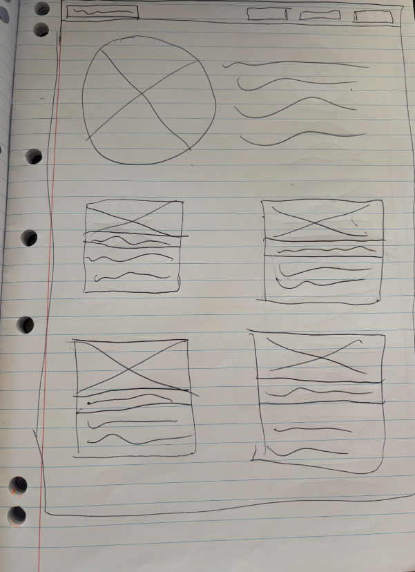

Project 1: Portfolio Website Design
Reflection
This term in computing tech, our common task was to design our portfolio website that will hold our projects that we do in the next 2 years. In the beginning, I wanted to have a more modern or digital-looking design on my home page and portfolio pages and a dark background, with tabs to other pages in the nav bar and larger ones with an image or description lower down on the homepage. We drew our wireframes in class on paper, then decided on a design that best fit. This was mine:

Reflection-Design Timeline
I started the actual design using github and visual studio code with an ai-generated boilerplate, then i
changed my font to a standard san-serif (using css) and my font and background colours to multiple
different cool toned ones to try to find my footing. I decided on a white/grey/blue/navy palette and the
font boldonse, and began customising my title and intro text, before adding flex boxes and divs for the
project links. This was my first struggle, trying to get the typography and flex box code to work, but
after trial and error and help from lil’ M, I managed to figure it out.
After that, I added the header, with the title of my website and the nav bar, which includes links to my
other pages. I then added the second page (the one you’re on now) and looked through my code and website
to fix any bugs or things that didn’t look right. Anything that I didn't know what to do I wrote at the
bottom of the page to ask Sir at school. After adding the footer, we had two periods at school where I
asked Sir for help with the things I couldn't figure out on my own, like aligning the intro and image
and fixing the project displays on the homepage, then I went home and fixed some of the images and text
on the project displays. In the last days of the design process, the nav bar/header became small and I
struggled with the alignment of the items on this project page. This can all be seen by looking at my
commits on github, avaliable by clicking the link 'Explore My Github' in the footer of this page.
Summary:
By the end of this process, my website ended up being minimalistic, with a blue colour palette and a more simplistic rounded feel. I learnt technical skills, like how to code HTML and CSS and how the framework of a website is built and how it works, design skills, like colour theory and typography and life skills, like time management and planning. In the future, I’d like to troubleshoot the few issues I haven't solved yet, like the alignment and nav bar on this page, but I couldn’t fully figure it out on my own and if we ever learn javascript, I would like to add to the ‘welcome’ title on the homepage to include the day (so it says ‘happy Wednesday’ or something). This term I have enjoyed designing and coding this website to display my future work in this subject, and working with my friends to learn how websites work and how they’re made.